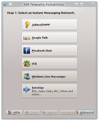

KDE-Telepathy
Dieser Artikel wurde für die folgenden Ubuntu-Versionen getestet:
Ubuntu 14.04 Trusty Tahr
Zum Verständnis dieses Artikels sind folgende Seiten hilfreich:
KDE-Telepathy  ist ein auf Telepathy basierender Instant Messenger, der eine Vielzahl von Protokollen unterstützt und es ermöglicht, mehrere Instant-Messaging-Dienste wie XMPP (Jabber) oder ICQ gleichzeitig zu verwenden. Er ersetzt damit Kopete.
ist ein auf Telepathy basierender Instant Messenger, der eine Vielzahl von Protokollen unterstützt und es ermöglicht, mehrere Instant-Messaging-Dienste wie XMPP (Jabber) oder ICQ gleichzeitig zu verwenden. Er ersetzt damit Kopete.
Unterstützte Protokolle¶
KDE-Telepathy befindet sich in aktiver Entwicklung und unterstützt bislang folgende Instant-Messaging-Dienste:
AIM (AOL Instant Messenger)
Novell Groupwise
ICQ
MSN
mxit
myspace
qq
Salut/Bonjour/People Nearby
sametime
silc
SIP
XMPP (Jabber) (siehe auch Habe-ich-vielleicht-schon-ein-Jabber-Nutzerkonto?)
Yahoo! und Yahoo! Japan
Zephyr

IRC unterstützung wurde in v0.5 entfernt
Installation¶
KDE-Telepathy ist in Kubuntu seit Version 14.04 vorinstalliert.
kde-telepathy
 mit apturl
mit apturl
Paketliste zum Kopieren:
sudo apt-get install kde-telepathy
sudo aptitude install kde-telepathy
Die neuste Version kann über die Kubuntu-Backports installiert und getestet werden:
Adresszeile zum Hinzufügen des PPAs:
ppa:kubuntu-ppa/backports
Hinweis!
Zusätzliche Fremdquellen können das System gefährden.
Ein PPA unterstützt nicht zwangsläufig alle Ubuntu-Versionen. Weitere Informationen sind der  PPA-Beschreibung des Eigentümers/Teams kubuntu-ppa zu entnehmen.
PPA-Beschreibung des Eigentümers/Teams kubuntu-ppa zu entnehmen.
Damit Pakete aus dem PPA genutzt werden können, müssen die Paketquellen neu eingelesen werden.
Unter GNOME Shell und Unity empfiehlt es sich stattdessen, Empathy zu verwenden.
Einrichten¶
Nach Abschluss der Installation kann KDE-Telepathy über "K-Menü → Internet → Telepathy-Kontaktliste" gestartet werden. Alternativ steht für den Start [2] unter KDE auch der Terminal-Befehl kde-telepathy-contact-list zur Verfügung. Unter Unity erfolgt der Start mit "KDE-Instant-Messenger-Kontakte".
Konto¶

Mit dem ersten Start von KDE-Telepathy wird man vom Konto-Manager begrüßt, der es relativ intuitiv und in wenigen Schritten ermöglicht, ein Instant-Messaging-Konto einzurichten. Alternativ gelangt man über "Schraubenschlüssel-Menü → Zugänge einrichten" zum Konto-Manager.
Um ein bestehendes Konto einzurichten, geht man im Allgemeinen wie folgt vor:
"Zugang hinzufügen" und Protokoll-Typ auswählen (XMPP, ICQ, ...)
Benutzername und Passwort eingeben
Klick auf "Fertigstellen"
Optional: Die Konto-Bezeichnung durch Klick auf das bereits markierte Konto ändern
Je nach Protokoll bietet der Konto-Manager noch diverse Einstellungen für Fortgeschrittene an, die bei Bedarf geändert werden können.
Eine Liste von Instant-Messaging-Diensten, bei denen man sich zunächst registrieren muss, findet man hier.
Kontakt hinzufügen¶
Einen neuen Kontakt hinzuzufügen, gestaltet sich wie folgt:
"Neue Kontakte hinzufügen" (Piktogramm mit Person und +)
Zugang auswählen, dem der neue Kontakt hinzugefügt werden soll
Optional: Anzeigename ändern
"Ok"
Status-Meldungen¶
Der aktuelle Status sowie dessen Einstellungsmöglichkeiten finden sich am oberen Fensterrand.
Einstellungen¶
Bisher sind nicht viele Einstellungsmöglichkeiten vorhanden. Die wenigen vorhandenen Möglichkeiten sind über die Symbole im oberen Bereich des Anwendungsfensters erreichbar.

- Erstellt mit Inyoka
-
 2004 – 2017 ubuntuusers.de • Einige Rechte vorbehalten
2004 – 2017 ubuntuusers.de • Einige Rechte vorbehalten
Lizenz • Kontakt • Datenschutz • Impressum • Serverstatus -
Serverhousing gespendet von